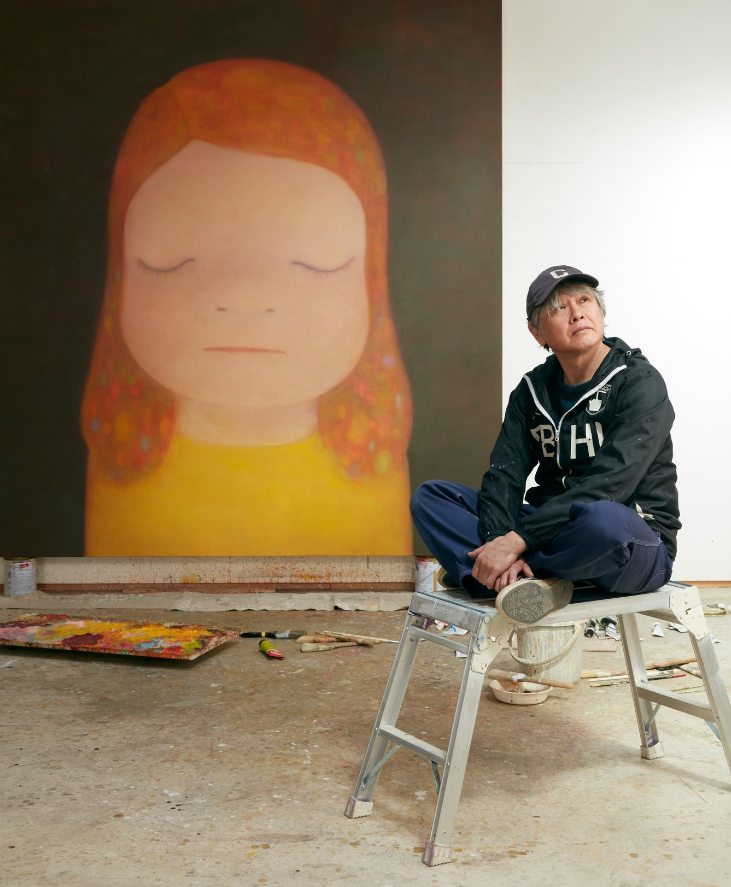
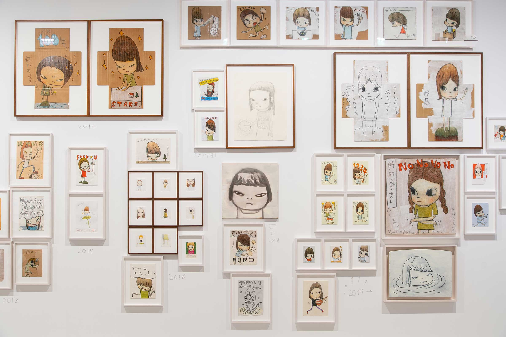
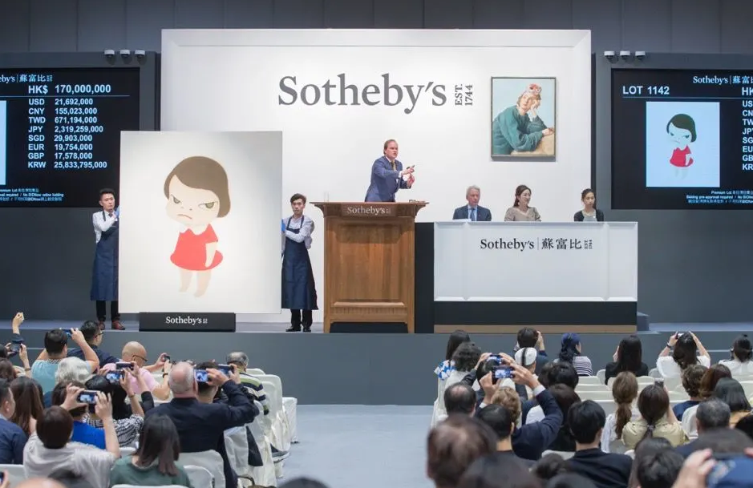

About Yoshitomo Nara
Yoshitomo Nara (born on December 5, 1959 in Hirosaki, Aomori Prefecture, Japan) is among the most beloved Japanese artists of his generation. He lives and works in Nasushiobara, Tochigi Prefecture, though his artwork has been exhibited worldwide.
He recieved both a bachelor in fine arts (1985) and completed a master’s degree program at Aichi University of the Arts (1987). He moved to Germany in 1988 and enrolled at Kunstakademie Düsseldorf. After residing in Cologne, he repatriated to Japan in 2000.
Nara has had nearly 40 solo exhibitions since 1984 across various places such as Europe, the United States, Japan, and Asia. His art work has been housed at the MoMA and the Los Angeles County Museum of Art (LACMA). He has also had teaching experience as a guest professor in various institutions such as at the University of California Los Angeles (UCLA), National school of Fine Arts Paris (ENSBA), and Musashino Art University in Japan.
Style and Influences
Yoshitomo Nara's art is a unique blend of innocence and rebellion. The juxtaposition that has become his signature style that evolved from his early fascination with manga and anime. Influenced by punk rock and the DIY ethos, his work spans various mediums, including paintings, drawings, sculptures, and installations.
Nara's iconic characters, often portrayed with large, expressive eyes, symbolize his artistic expression. Themes of isolation, rebellion, and the complexities of human relationships permeate his pieces, reflecting a deep exploration of emotions, identity, and the human experience.
Known for powerful portraits featuring characters with piercing eyes, Nara's subjects, often described as "big-headed girls," embody kawaii (cuteness) with a dark humor. While Nara denies direct manga influence, the imagery of his 1960s childhood anime and manga is evident in his stylized, large-eyed figures, subverted with horror-like elements—a potential reaction to Japan's social conventions.
Nara's artistic roots extend to his musical education and the punk rock of his youth, influencing his raw encounters with inner self in menacing portraits. His upbringing in post-World War II Japan, surrounded by Western pop culture, comic books, and music, profoundly impacted his independent childhood and may explain the fiercely independent subjects in his artwork.
A peripatetic traveler, Nara draws inspiration from diverse sources—childhood memories, music, literature, life in Germany, exploration of roots in Japan and Asia, and exposure to modern art. Spanning over 30 years, his body of work, showcased in various mediums, reflects his conceptual process and passion for music, evident in album covers collected since adolescence. The exhibition provides a comprehensive view of Yoshitomo Nara's evolution as an artist.
Awards and Grants
 Nara's impact extends far beyond the borders of Japan where he is recognized internationally. His exhibitions have graced prestigious galleries and museums worldwide, earning him a dedicated global following. His ability to connect with people on a profound level has made his art a powerful force that transcends cultural boundaries. Yoshitomo Nara's impact on contemporary art is undeniable. His ability to capture the essence of the human spirit in a simple yet profound way has left an indelible mark on the art world.- 2021 - amfAR Award of Excellence for Artistic Contributions to the Fight Against AIDS
- 2017 - Aichi Prefectural Art and Culture Encouragement Prize Culture Award
- 2016 - 2016 Asia Arts Awards
- 2014 - The 67th Too Award
- 2013 - The 63rd The Minister of Education, Culture, Sports, Science and Technology's Art Encouragement Prize (Fine Arts)
- 2010 - Awarded by International Center of Catholic Charities Community Services in New York
- 1995 - Nagoya City Art Award, Encouragement Award
- 1984 - The 5th TAKIFUJI Art Award